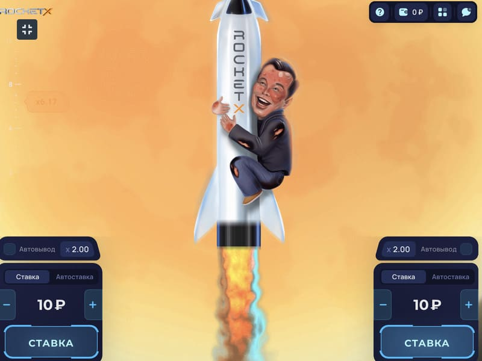

Play Rocket X at an online casino
The collection of top crash games is complemented by the original Rocket X. Developed by 1Play, it provides a simple game loop with multiple strategic choices for players. The rounds are dynamic, you can simply watch them, analyse the results of other players, or join at will at any time.
This is a multiplayer game where only the participant decides when to end the round. Such decisions allow you to be content with minimal winnings or strive to hit the big jackpot by experiencing enchanting emotions while playing Rocket X.
Reasons for popularity of Rocket X
The popularity of the Rocket X game is due to many advantages:
Players decide on their own when to withdraw winnings. In this case, you can get the minimum prize and lose the chance to become the owner of a big jackpot. Each round is an unknown, which adds drive.
The accrual program operates according to the Provably Fair system, which varies the results, taking into account randomly selected combinations and players' bets. You can check the transparency of the results at any time using the corresponding window in the settings.
The development resembles the popular Aviator, Jet X, but differs in plot and some features. This is the perfect solution for changing gameplay, and developing new strategies for greater chances of earning big wins.
The highest value that can fall is not fixed. For significant wins, it will be enough to get a multiplier of x100 and higher. According to testing, an approximate value falls out once every hour and a half, and even much more.
Rocket X game options allow you to analyze previous rounds, as the results are recorded in the table. Players have access to the history of several dozen rounds, which is quite informative for analyzing and making the right decisions.
Of the pluses, you can highlight a simple betting panel located on the left or bottom, depending on the gadget used. The launch of the Rocket X game is possible from a PC, laptop, tablet, and mobile phone. The panel displays the values of All, My, and Top bids. It is possible to view the winnings and odds of other participants by taking a long period - a month, a year. Using the in-game chat, players can communicate with each other, and share successes, strategies, and recommendations.
How to play and win in Rocket X

The plot of the game Rocket X is the takeoff of a rocket, which is held by a young man, realistically enjoying the flight. The player needs to have time to place bets from 0.1 to 140 credits. It is permissible to set two types of values, increasing the chances of winning. The game contains several additional features for customization:
You need to set certain coefficients, activate the function and wait for the results. This is a great pastime option when you have your winning tactics.
Next comes the launch. The round is spectacular with a bright rocket trail and an increasing multiplier. At any time, if auto-withdrawal is not set, the player will determine the outcome. You can make a cashout at will, but the higher the coefficient, the greater the prize accrual. The peculiarity is that in chasing the highest Jackpot, there are rather big risks of losing the bet. The ability to stop in time, as well as the use of various strategies and tactics, leads to winning rounds.
Strategies and tactics in Rocket X

There are many effective strategies that you can try out in Rocket X for free by running the demo. The most popular tactics among players include the following:
Minimalism is more about the value of the coefficient. Players need to withdraw their winnings as soon as the multiplier enters the x1.5-x1.8 range. No one guarantees big Jackpots, but a small win will often be in your pocket.
The multiplier range in this case is from x2 to x3. Players note fairly frequent luck, 40-50%, which fully justifies the decisions and allows you to recoup after unsuccessful attempts.
Expectation coefficient x100 and above. After analyzing most of the players' comments, we can conclude that a high multiplier drops out on average once every one and a half hours. Since there is a history of results here, it is quite possible to observe the results and draw the right conclusions by applying high stakes at a certain time.
There is no single winning strategy since the game operates on a random system. There are many ways to bring Lady Fortune's favour closer. At the same time, it is also important to take into account the allocated limit and spend time without exceeding it.
Essence of Rocket X game

Players can play Rocket X for fun and budget replenishment. Having chosen goals for himself, the user needs to click Start or Demo. By placing bets with real money, it is quite possible to always stay in the black, which is proved by the numerous positive reviews of the players. A high percentage of return is another confirmation of the profitability of the gameplay.
ГWhere to play Rocket X

For fans of crash games, Rocket X will be a pleasant surprise. Where can I try to play Rocket X? On our site, you will find a list of verified online casinos that provide a licensed version of the Rocket X game. Be sure that any of the casinos below do not interfere with the game round, and also guarantee the payment of winnings. If you decide to play Rocket X, then follow the links to trusted online casino sites and start playing.